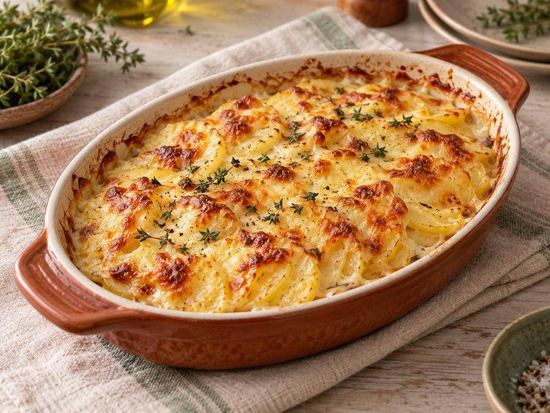
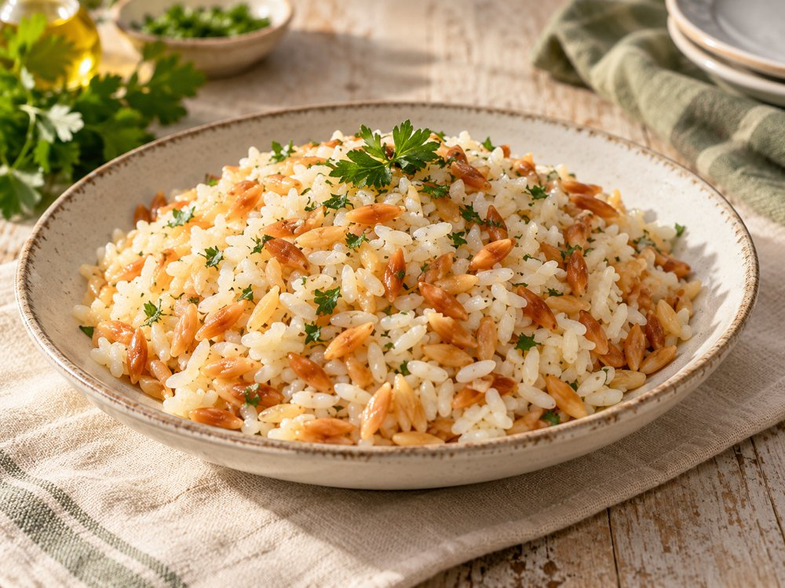

Yan Yemekler
Fırında Sütlü Patatesİnce patates dilimlerinin sütle yumuşayıp kaşarla kızardığı sıcak bir eşlikçi.

Tane tane, tereyağlı ve şehriyeli klasik pirinç pilavı.
Su bardağı 200 ml · Çay bardağı 100 ml
Pirinci nişastası gidene kadar yıka ve süz.
Tereyağında şehriyeyi renk alana kadar kavur.
Pirinci ekleyip birkaç dakika çevir.
Sıcak su ve tuzu ekle.
Kısık ateşte suyunu çekene kadar pişir.
Altını kapatıp 10 dakika demlendir.
Pilavı demlenirken kapağın altına temiz bir bez koyabilirsin.
Ana yemeğin yanındaki en tanıdık eşlikçi.
4 kişilik olarak hazırlanır. Malzemeler bu miktara göre listelenmiştir.
Tarifte belirtilen yaklaşık süre 30 dk. Süre, hazırlık hızına ve kullanılan ekipmana göre değişebilir.
Pilavı demlenirken kapağın altına temiz bir bez koyabilirsin.
Görsel yapay zekâ ile oluşturulmuş bir sunum örneğidir. Kendi yemeğinizin görünümü farklı olabilir.